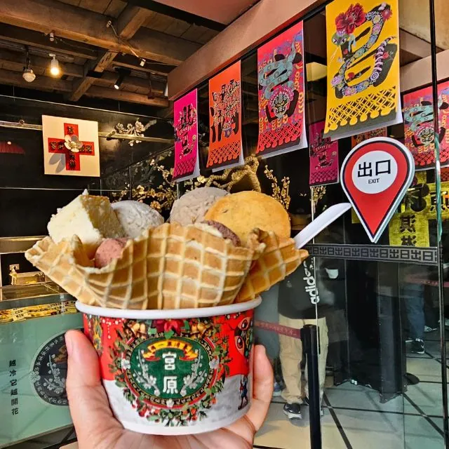
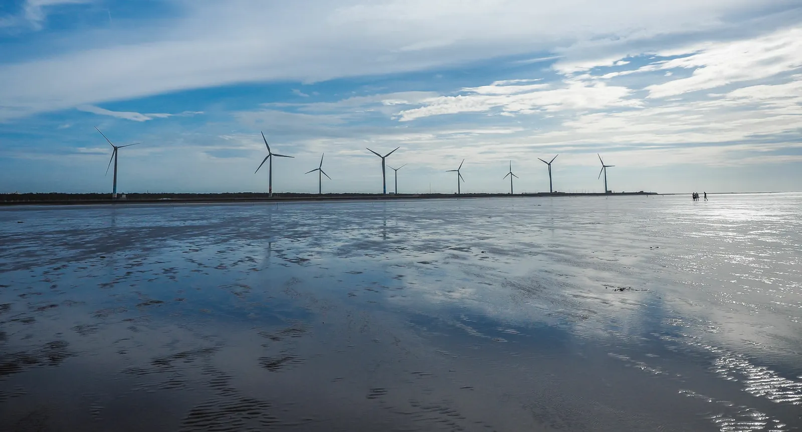

Taiwan · City Guide · June 2026
48 hours anchored on a 3-star Michelin dinner
Jimmy Lim's kitchen reinterprets Singaporean hawker classics — chicken rice, kaya toast, laksa, satay — through French technique and premium Taiwanese ingredients. The world's first 3-Michelin-starred Singaporean restaurant, and Taichung's only multi-star restaurant. [15]
3.6 km art corridor from the Natural Science Museum south to the Fine Arts Museum, lined with sculptures, ~200 indie shops and weekend markets. [5] Almost no transport needed — the whole loop is walkable. [4]
Mid-way: Shen Ji New Village — former provincial dormitory turned indie studios and markets. [19]
Free · West District
Pritzker-winner Toyo Ito's building of 58 curved walls — "the building itself is an opera." Free to roam the public spaces. [6]
Free entry · Xitun District · Tue–Thu & Sun 11:30–21:00, Fri–Sat to 22:00
The 1927 eye-clinic-turned-ice-cream-emporium. 50+ flavors from NT$100. Hogwarts-styled interior; go early before the queues build. [7]
From NT$100 · Central District · 10:00–21:00 daily

The main event. 9+ courses, NT$5,880 per person. Pairing is mandatory — no à la carte drinks.
Kaya toast in frozen-kaya shell · chicken rice with Taiwanese fish · satay → foie gras ice cream with peanut sauce. [23]
If JL Studio is booked for lunch instead, the evening opens for Fengjia — Taiwan's street-food trend lab, Xitun District. [11]
800 m boardwalk across 300 ha fringed by 18 wind turbines that silhouette against the coastal sunset. Boardwalk closes around high tide — check tide tables before you go. [9]
Free · ~45 min by train to Qingshui + bus 178/179 [8]

Folk murals by "Rainbow Grandpa." ⚠ Diminished since 2022: ~50% of murals vandalized, café and shop closed. A worthwhile detour, not a half-day. [20]
Free (NT$50–100 donation welcome) · Nantun · Tue–Sun 9:00–17:00
Taichung's signature flaky maltose pastry, originated here. Sold in gift boxes near the train station. [21]
National Taiwan Museum of Fine Arts — Taiwan's only national-grade fine-arts museum; free; Tue–Fri 9–17, weekends to 18. [18] Specialty coffee at Coffee Stopover or Tomorrow Coffee (both World's Top 100 Cafes 2026). [25]
300 ha coastal reserve with wind turbines and a 800 m boardwalk. The strongest Day 2 pick for payoff-per-hour. Arrive before sunset, at low tide. [9]
3.6 km art corridor: Natural Science Museum → Fine Arts Museum → Shen Ji New Village. The spine of the Day 1 program — everything walkable, no transport needed. [5]
| Stop | What & why | Notes |
|---|---|---|
| Fengjia Night Market | Street-food trend lab — new snacks debut here before going island-wide. [11] | Xitun District · evening only |
| Bubble tea — origin | Chun Shui Tang claims staffer Lin Hsiu Hui invented it here in 1987. [17] | Multiple city locations |
| Specialty coffee | Coffee Stopover & Tomorrow Coffee — both World's Top 100 Cafes 2026. [25] | Excellent rain refuge |
| Suncakes (taiyang bing) | Taichung's signature flaky maltose pastry, originated here. [21] | Gift boxes near train station |
If JL Studio is unavailable: Fleur de Sel (1-star French contemporary, Xitun, NT$3,880–5,880) or four other 1-star options per the Michelin Guide Taiwan 2025. [3]
Highs near 31°C with sporadic downpours. JL Studio is fully indoors and unaffected. The Calligraphy Greenway, Miyahara, and the Fine Arts Museum all work in rain — hold them as wet-weather fallback if Gaomei is washed out. [10]